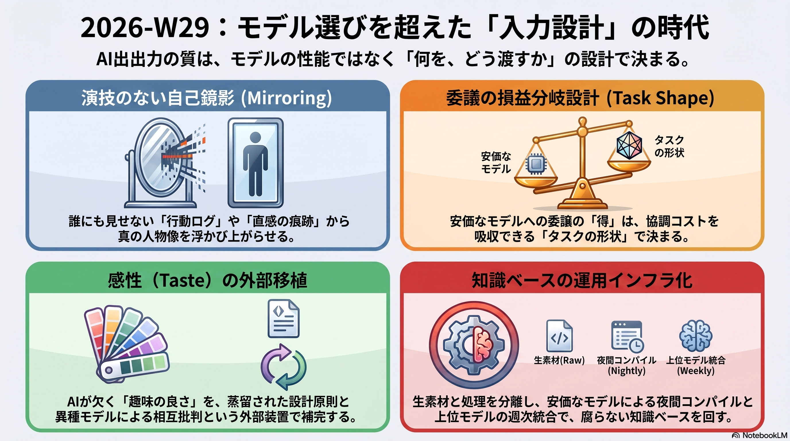
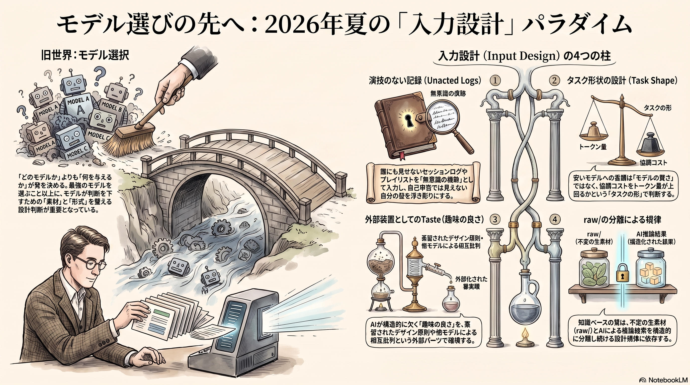

Weekly Insights: 2026-W29（2026-07-13〜07-19）
今週のホットトピック

- session-history-mirror 演技していない記録から人物像を掘る — セッションログや無意識に保存した画像・音楽といった「誰にも演技していない記録」をAIに分析させ、自己申告では出てこない自分の型を浮かび上がらせる手法が2つ並んだ（X bookmark 5,752 / 12,963）。
- cost-effective-harness 委譲はいつ引き合うか——タスク形状の設計問題 — 安いモデルへの委譲が得かどうかは「良いモデルを選ぶ」でなく「判断が前倒しか散在か・協調コストを吸収トークン量が上回るか」というタスク形状の設計問題だと実測で示された。
- emil-kowalski-skills エージェントに taste を移植する — エージェントが構造的に欠く「趣味の良さ」と自己過信を、原則の蒸留スキルと異種モデルの相互批判という外部装置で補う動きが並走している（X bookmark 20,273）。
- second-brain-operations 第二の脳を運用インフラとして回す — 知識ベースの質を決めるのはモデルティアでなく、raw/を不変に保ち夜間は安モデル・週次シンセシスのみ上位モデルという入力と処理の分離設計だ（X bookmark 9,327）。
深掘り
session-history-mirror 演技していない記録から人物像を掘る @EXM7777が公開したセッション履歴分析プロンプトは、日記やセラピーでは人が読み手向けに演技するのに対し、コーディングエージェントへの依頼では誰も演技しないという非対称性を突く。Excavate→Distill→Interview→Mirror→Leverage→Residueの6フェーズで、証拠は「日付つき3回以上の出現で初めてパターン」という基準まで明文化されている。同じ週に公開されたchokkan-karteは、言葉でなくPinterest保存画像や音楽プレイリストという「なんとなく選んだ」非言語素材を入力にする対の手法で、EC実践者の寺田正信氏はこれを「答えを直接聞くのでなく答えになる素材を渡す」順番の転換だと再解釈した。どちらも共通するのは、意識的に選ばれた自己申告でなく無意識に残った痕跡を入力にすることで演技を迂回する設計。
cost-effective-harness 委譲はいつ引き合うか——タスク形状の設計問題 LangChainのLance Martinは、Fable 5委譲の損益分岐を2つの実験で実測した。判断がタスク全体に散在するParameter Golfでは、Fable 5単独の改善幅の約90%を約34%のトークンコストで達成できたが、易しいBrowseCompサブセットでは委譲がむしろ60%割高になり性能向上もなかった。分かれ目は「委譲するトークン量が境界重複・fan-out重複という協調コストを上回るか」というタスク形状の設計であり、良いモデルを選ぶ話ではない。同じ週にfable-sprint-strategyの@AI_masaouは、週50%の利用制限下でPlanner/EvaluatorにFable 5・Generatorに下位モデルを配置する実践を報告し、初日はコンテンツ制作でなく「ログを改善し続ける基盤」を仕込むべきだと述べた。皮肉にも同じ週、OpenAIはgpt-5-6でSol/Terra/Lunaの3層をピーク知能でなくトークン効率で押し出しており、業界全体が「最高のモデルをどう配置するか」という同じ問いに向き合っている。
emil-kowalski-skills エージェントに taste を移植する
デザインエンジニアのEmil Kowalski氏は「エージェントにはtasteがない」と診断し、AppleのWWDC動画から蒸留した17のデザイン・モーション原則をapple-designスキルとして公開した。同氏は、これらのスキルがドメイン専門性の副産物であり、AIは専門性を置き換えるのでなく増幅すると述べる。一方@wayama_ryousuke氏が公開したadversarial-panelは、単一モデルの自己批判が生成時と批判時の盲点を共有してしまう構造的欠陥——self-preference biasを診断し、独立したモデルに反証させることで「間違っているのに自信満々」を出荷前に検出する。tasteの欠如を参照原則で補うか、自己過信を異種モデルの相互批判で補うか——どちらもエージェントが構造的に持たないものを外部装置で埋める設計になっている。
second-brain-operations 第二の脳を運用インフラとして回す @EXM7777は、出力の質を決めるのはモデルティアでなく知識ベースの構造だと主張し、raw/（不変の生素材）・entities/・concepts/・INDEX.mdの4ピース構造を、夜間コンパイルは安モデル・週次シンセシスのみ上位モデルという配分のスケジュールループで回す設計を公開した。核となる規律は「rawとコンパイル済みを常に分離する」ことで、同じエージェントが同じノートを読み書きし続けると詳細が滲み誤りが複利するという理由づけがある。fan-out+skepticという入力側のリサーチマシン設計と、CLAUDE.mdを索引に徹させ本文を含めない「pay-per-read」というコスト設計も併記されており、このvault自体が既に部分実装しているingest/lint/weeklyループとの差分を測る材料になる。
今週の中心テーマ
今週の記事を貫くのは「どのモデルを選ぶか」でなく「モデルに何を、どんな形で渡すか」という一段手前の入力設計だった。演技のないログ、タスク形状、tasteの参照素材、raw/の分離——すべてが同じ設計判断を指している。

根拠ページ
- session-history-mirror（→ 今週のホットトピック#1）
- chokkan-karte（→ 今週のホットトピック#1）
- cost-effective-harness（→ 今週のホットトピック#2）
- fable-sprint-strategy（→ 今週のホットトピック#2）
- emil-kowalski-skills（→ 今週のホットトピック#3）
- adversarial-panel（→ 今週のホットトピック#3）
- second-brain-operations（→ 今週のホットトピック#4）
- gpt-5-6 — OpenAIの新世代モデル。ピーク知能でなくトークン効率とコストを主戦場に据え、Fable 5をほぼ一貫して比較対象に名指しした
- google-ai-studio — Google AI Studioがデプロイ済みアプリへのpretty URL無料提供を発表。作る→配る→URLで広める個人開発の全行程を無料化する動き
- video-use — Claude Codeに動画編集をさせるOSS。フィラー語・無音区間のカットから字幕・カラー調整までを会話で進める
既存wikiとの接続
- llm-model-selection-strategy — cost-effective-harnessとsecond-brain-operationsがともに参照する工程分解型モデル選択の一般形。「ルーチンは安モデル・判断は上位モデル」という今週の入力設計論に、この既存ページの上流→中流→下流サンドイッチ戦略が理論的な土台を与える。
- multi-agent-patterns — 被参照43件のハブ。adversarial-panelの誤りの非相関設計、cost-effective-harnessのfan-out重複コストは、いずれもこのハブが扱うマルチエージェント協調パターンの具体化にあたる。
- loop-engineering — 被参照33件のハブ。second-brain-operationsの夜間コンパイル・週次lint・週次シンセシスというスケジュールループ、fable-sprint-strategyの「初日はメタハーネスから」という発想は、いずれもこのハブが定義する「エージェントをプロンプトするループを設計する」工学の具体例。
sugeta-san への問い
second-brain-operationsが提案するsession hook・skeptic付きリサーチマシン・ページのexpiry dateのうち、このvaultの既存自動化（ingest/lint/weekly）が既にカバーしているのはどれで、まだ投資対効果が測れていないのはどれですか。
→ 記事の書き込みルール「rawとコンパイル済みを常に分離する」は、このvaultのsources/とwiki/の分離構造で既に実装済みです。一方session hook（セッション終了時の自動採掘）とskeptic（新規発見への反証専任エージェント）は未実装で、後者は本vaultが誤検知支配で撤去した独立審判と設計目的が異なる（新規リサーチの入口選別 vs 既存ページの再採点）ため、再検討の余地があります。
今週の小アクション（5分）
ls -la ~/.claude/projects を実行し、session-history-mirrorのPhase 1「Excavate」相当——中身は読まず、セッションアーカイブのファイル数・期間だけを確認する——を1回試す。目録を見た時点で「6フェーズを走らせる価値があるボリュームか」だけ判断する。
いますぐAIと一緒に（コピペ）
以下をそのまま Claude Code に貼って、second-brain-operationsが提案する運用ループと自分のwiki運用を突き合わせてください。
wiki/concepts/second-brain-operations.md を読み、この記事が提案する3つの要素
（session hook / skeptic付きリサーチマシン / ページのexpiry date）それぞれについて:
1. このリポジトリの既存の自動化（.claude/skills/wiki-ingest/SKILL.md・
scripts/validate_wiki.py・.claude/skills/gen-weekly-insights/SKILL.md）で
既にカバーされているものはどれか
2. カバーされていないもののうち、導入コストと期待効果から最も投資対効果が
高いものはどれか
を判定してください。判定根拠は記事の該当箇所とこのリポジトリの実装ファイルの
両方を引用してください。
参照: wiki/concepts/second-brain-operations.md, docs/DEVELOPING.md
さらに読むべきページ
- gpt-5-6 — Fable 5と競合するOpenAI新世代モデルの効率戦略。cost-effective-harnessの「委譲の損益分岐」を業界全体の設計思想として捉え直すのに読む価値がある。
- adversarial-panel — emil-kowalski-skillsとセットで読んだ「エージェントの構造的欠落を補う」設計の技術詳細。Round0〜Synthesisのプロトコルとアンチパターン集は自分のwiki運用にも転用できる粒度で書かれている。
- ai-strategist-prompt — session-history-mirror自身が「差分」として挙げる既存ページ。同じ「自己の履歴をAIに掘らせる」型の会話履歴版で、比較すると証拠ゲート設計の効きどころが見える。